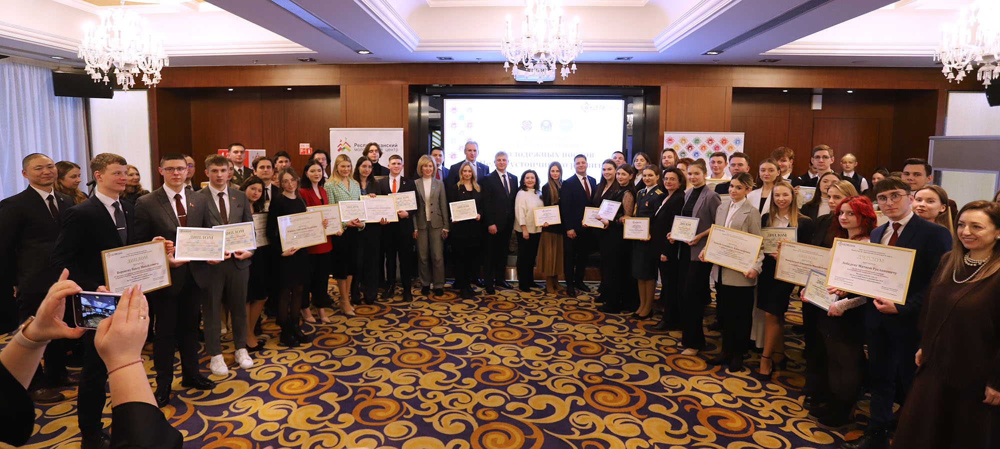
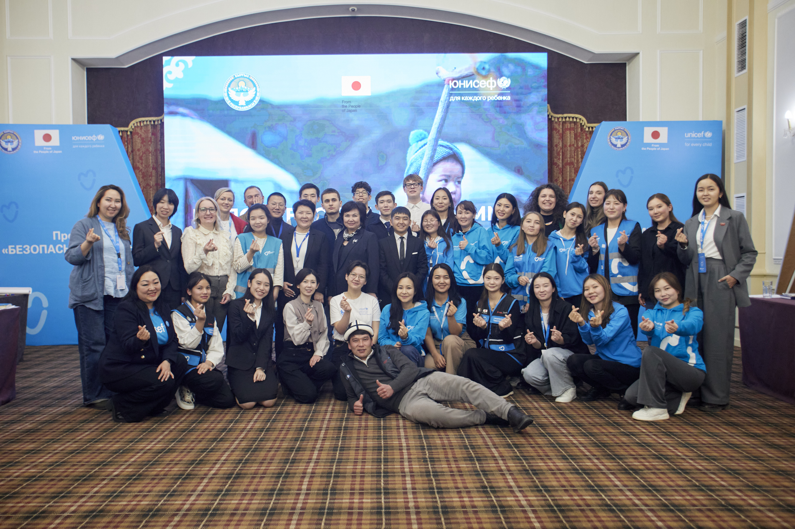
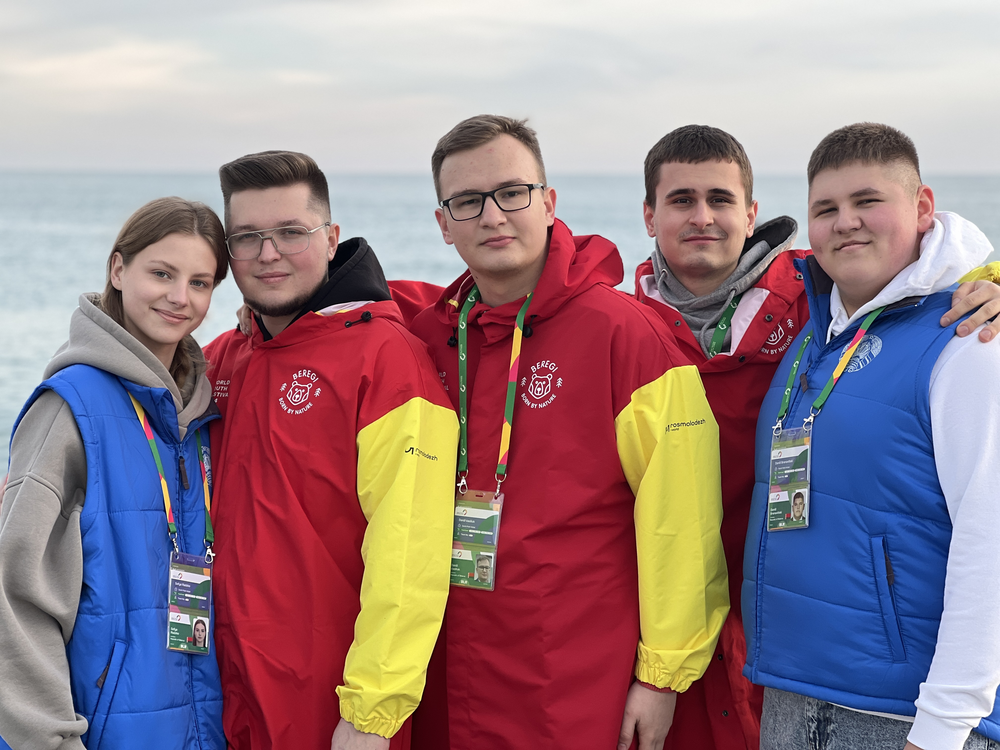
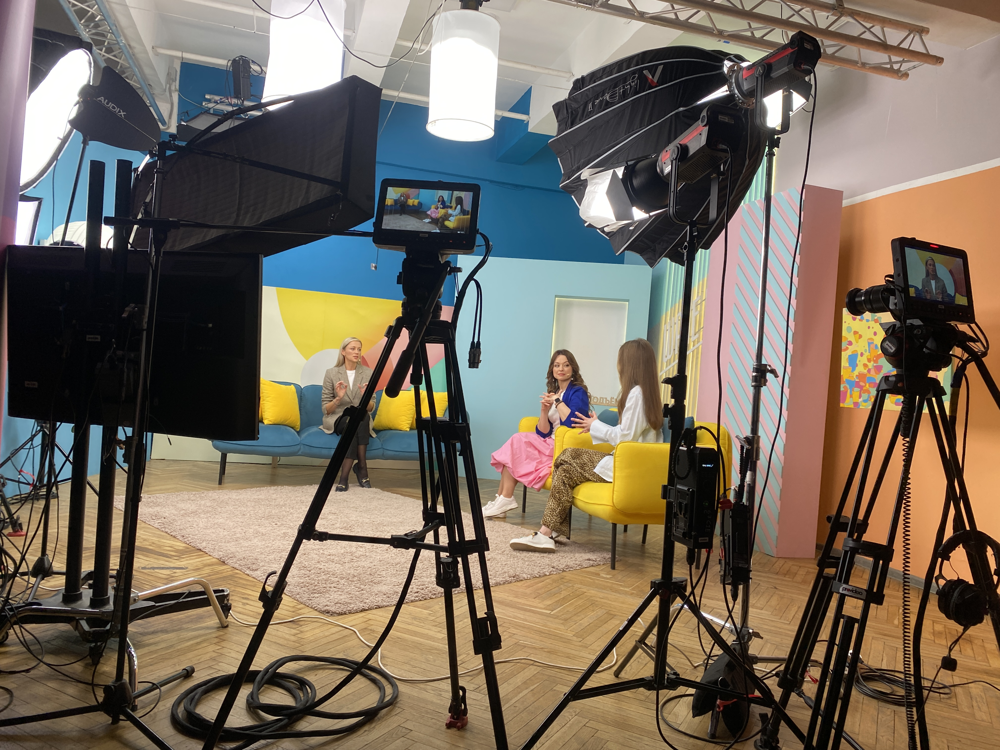
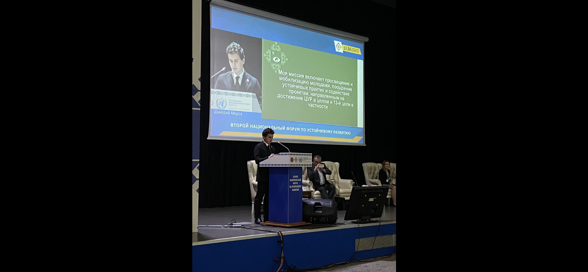
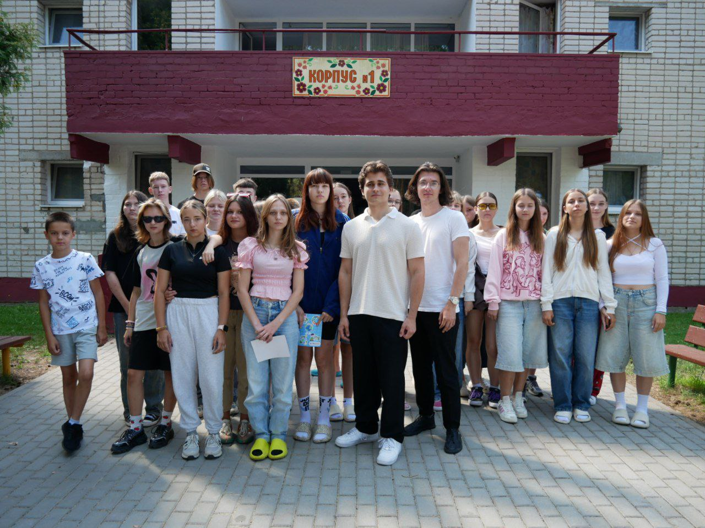
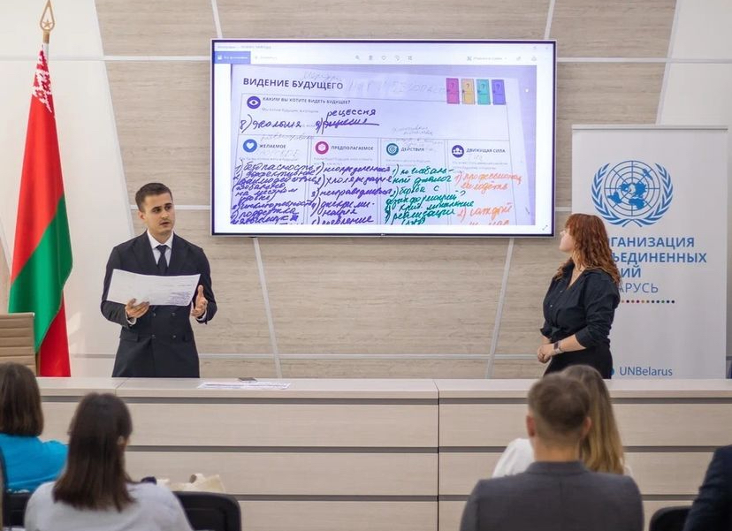
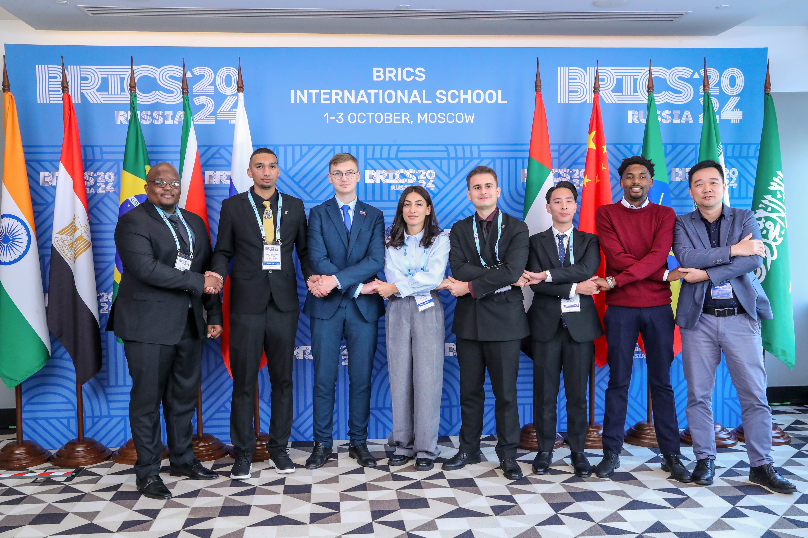

Мои хобби
Молодежный посол ЦУР – это человек из студенческой среды, который разрабатывает свою концепцию действий для реализации выбранной Цели устойчивого развития. Главный слоган послов ЦУР — «В устойчивое будущее вместе». Молодежные послы популяризируют ЦУР среди молодого поколения, рассказывают об этапах достижения показателей устойчивого развития, а также помогают молодым людям приобретать знания и навыки 21 века.
С февраля 2024 года я являюсь Молодежным послом Целей устойчивого развития.
С тех пор у меня было немало заграничных командировок с целью представить Республику Беларусь.
Например, поездка на международный климатический форум в Бишкек в феврале 2024 года.
Также участие во Всемирном фестивале молодежи в Сочи в марте 2024 года.
Приходилось и на ТВ заглядывать, устраивая ЦУРлигбез.
Необошлось и без массы мероприятий по теме изменения климата.

Еще больше ЦУР-форумов и фестивалей.

Опыт выступления на маштабнийшем Втором Национальном ЦУР-форуме в роли спикера.
Взаимодействие с государственными структурами,агенствами ООН,да и работа с детьми,куда же без этого!
Недавно саммит в Нью-Йорке был,так Молодежные послы + иные представители общества создавали вместе видиние будущего глазами белоруссов, чтобы представить потом в Нью-Йорке!
Да и вообще международные отношения и дипломатия мне крайне близки! В октябре был в Москве вместе с представителями еще 35 стран в рамках БРИКС+. Вот такое хобби)
